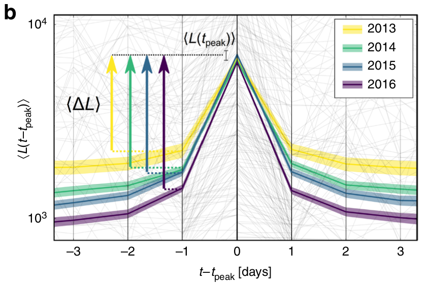

author: niplav, created: 2023-01-17, modified: 2023-03-13, language: english, status: notes, importance: 7, confidence: unlikely
I investigate whether the attention span of individual humans has been falling over the last two decades (prompted by curiosity about whether the introduction of the internet may be harmful to cognitive performance). I find little direct work on the topic, despite its wide appeal, but reviewing related research indicates that individual attention spans might have been declining
$_{70\%}$.
In what might be just the age-old regular ephebiphobia, claims have been raised that individual attention spans have been declining—not just among adolescents but also among the general population. If so, this would be quite worrying: Much of the economy in industrialized societies is compromised of knowledge work, and knowledge work depends on attention to the task at hand; switching between tasks too often might prevent progress on complicated and difficult tasks.
I became interested in the topic after seeing several claims that e.g. Generation Z allegedly has lower attention spans, observing myself and how I struggled to get any work done when having an internet connection, and reports of others online of having the same problem.
The exact question being asked is:
"Have the attention spans of individuals on neutral tasks (that is, tasks that are not specifically intended to be stimulating) declined from 2000 to the present?"
(One might also formulate it as "Is there an equivalent of the “Reversed
Flynn Effect”
for attention span?".) I am not particularly wedded to the specific
timeframe, though the worries mentioned above assert that this has
become most stark during the last decade or so, attributing the change
to widespread social media/smartphone/internet usage. Data from before
2000 or just the aughts
would be less interesting. The near-global COVID-19
lockdows
could provide an especially enlightening natural
experiment: Did
social media usage increase (my guess: yes$_{90\%}$), and if so, did
attention spans decrease at the same time (or with a lag) (my guess:
also yes$_{75\%}$), but I don't think anyone has the data on that and
wants to share it.
Ideally want to have experiments from ~2000 up to 2019: close enough to the present to see whether there is a downward trend (a bit more than a decade after the introduction of the iPhone in 2007), but before the COVID-19 pandemic which might be a huge confounder, or just have accelerated existing trends (which we can probably check in another 2 years).
I am mostly interested in the attention span of individual humans and not groups: Lorenz-Spreen et al. 2019 investigate the development of a construct they call "collective attention" (and indeed find a decline), but that seems less economically relevant than individual attention span. I am also far less interested in self-perception of attention span, give me data from a proper power- or speed-test, cowards!
So the question I am asking is not
but simply
Attention is generally divided into three distinct categories: sustained attention, which is the consistent focus on a specific task or piece of information over time (Wikipedia states that the span for sustained attention has a leprechaun figure of 10 minutes floating around, elaborated on in Wilson & Korn 2007); selective attention, which is the ability to resist distractions while focusing on important information while performing on a task (the thing trained during mindfulness meditation); and alternating or divided attention, also known as the ability to multitask.
When asking the question "have attention spans been declining", we'd ideally want the same test measuring all those three aspects of attention (and not just asking people about their perception via surveys), performed anually on large random samples of humans over decades, ideally with additional information such as age, sex, intelligence (or alternatively educational attainment), occupation etc. I'm personally most interested in the development of sustained attention, and less so in the development of selective attention. But I have not been able to find such research, and in fact there is apparently no agreed upon test for measuring attention span in the first place:
She studies attention in drivers and witnesses to crime and says the idea of an "average attention span" is pretty meaningless. "It's very much task-dependent. How much attention we apply to a task will vary depending on what the task demand is."
— Simon Maybin quoting Dr. Gemma Briggs, “Busting the attention span myth”, 2017
So, similar to comas, attention span doesn't exist…sure, super-proton things come in varieties, but which varieties?? And how??? Goddamn, psychologists, do your job and don't just worship complexity.
Perhaps I should soften my tone, as this perspective appears elsewhere:
[…] Gould suggests the metaphor of a dense bush whose branches are periodically pruned by nature. This allows for paallel evolutionary sequences, some of which are adaptive and others not — at any moment in time only the tips of adaptive branches are in evidence, the pruned ones cannot be seen. Thus rather than being direct descendants of primitive hominids, for example, huankind would have evolved along a separate but parallel line from other primates.
Might the ontogeny of selective attention recapitulate this theme? That is, rather than selective attention comprising a single construct with a fixed ontogenic plan, might it be better conceptualized as a multidimensional construct with separat, parallel developmental trajectories for different components. To carry the analogy still further, might the specific developmental progression for a particular component of selective attention be determined by the adaptive fit of that component with the individual's ‘environmental press’? Although such a conjecture rekindles the tened of ontogeny recapitulates phylogney long since abandoned in physiological development (e.g., Dixon and Lerner, 1985), we suggest that it may nonetheless provide an overarching framework within which to cast life-span research and theory on the development of selective attention.
— Plude et al., “The development of selective attention: A life-span overview” p. 31, 1994
One of my hopes was that there is a canonical and well-established (and therefore, ah, tested) test for attention span (or just attention) à la the IQ test for g: If so, I would've been able to laboriously go through the literature on attention, extract the individual measurements (and maybe even acquire some datasets) and perform a meta-analysis.
I attempted to find a survey or review paper on attention span, but was unsuccessful in my quest, so I resulted to collecting metrics for attention span from different papers:
But, as it stands, I don't think that such an instrument
exists$_{35\%}$: The set of listed measures I found appears to be too
heterogenous, idiosyncratic, mostly not quantitative enough and measuring
slightly different things for me to pick one and drill down on.
Users that are older such as late adolescents and emerging adults average approximately 30-minutes daily for just Facebook that does not calculate the time spent on all social media networks
—Carstens et al., “Social Media Impact on Attention Span” p. 2, 2018
Bakardjieva and Gaden (2012) examined the field of social interaction in general to the everyday chatter of unstructured and spontaneous interactions among individuals to highly structured and regulated interaction consisting of the military or the stock exchange.
—Carstens et al., “Social Media Impact on Attention Span” p. 3, 2018
$\langle L(t_{\hbox{peak}}) \rangle$ on one day $t_{\hbox{peak}}$ stays relatively constant, while the average gradients $\langle ΔL \rangle$ in positive and negative direction become steeper over the years."
Compared to other feats that psychology is accomplishing, finding out whether individual attention spans are declining appears to be of medium difficulty, so I'll try to outline how this could be accomplished: Find a good instrument for measuring attention span, and then apply that instrument on random population samples for several years.
I have not been able to find a standard instrument for measuring attention span which returns a scalar or vector describing the attention span of an individual (optimally returning the number of seconds for the average attention span)—it appears that most published papers on the topic use survey data (which I fear to fall to social desirability bias) or behavioral cues (which I suspect are quite noisy), with the exception of Gausby 2015, who didn't explain their instruments in great detail.
(Note that I'm not a psychometrician, but I like speculating about things, so the ideas below might contain subtle and glaring mistakes. Noting them down here anyway because I might want to implement them at some point.)
It seems relatively easy to measure attention span with a power- or speed-test, via one of three methods:
t_change), and the time between the change of the stimulus and the reporting of the change (calling this value t_report). Performing this test with different value of t_change should result in different values of t_report. There is a t_change for which t_report falls over a threshold value, that t_change can be called the attention span.
t_change for which t_report falls over the threshold value.Such an instrument would of course need to have different forms of reliability and validity, and I think it would probably work best as a power test or a speed test.
I'm not sure how such a test would relate to standard IQ tests: would it simply measure a subpart of g, completely independent or just partially related to it?
Once one has a suitable instrument for measuring attention span, one can every year (or every second year) for a couple of years pick a random sample from the population (not of the same set of people, though, since attention span increases with age), e.g. via the internet if the test can be done online, save the data and finally apply a cross-sectional regression or a fancier statistical technique I don't know to find out whether attention spans have declined between the measurements.
Given the amount of interest the question about shrinking attention spans has received, I was surprised to not find a knockdown study of the type I was looking for, and instead many different investigations that were either not quite answering the question I was asking or too shoddy (or murky) to be trusted. I seems likely to me that individual attention spans have declined (I'd give it ~70%), but I wouldn't be surprised if the decline was relatively small, noisy & dependent on specific tests.
So—why hasn't anyone investigated this question to satisfaction yet? After all, it doesn't seem to me to be extremely difficult to do (compared to other things science has) accomplished), there is pretty clearly a lot of media attention on the question (so much so that a likely incorrect number proliferates far & wide), it appears economically and strategically relevant to me (especially sustained attention is probably an important factor in knowledge work, I'd guess?) and it slots more or less into cognitive psychology.
I'm not sure why this hasn't happened yet (and consider this text evidence for a partial violation of Cowen's 2nd law). The reasons I can think of is that one would need to first find a good test for determining attention span, which is some work in itself, be relatively patient (since the test would need to be re-run at least twice with a >1 year pause, for which the best grant structure might not exist), there are many partial investigations into the topic, making it appear like it's solved, and perhaps there just aren't enough cognitive psychologists around to investigate all the interesting questions that come up.
So I want to end with a call to action: If you have the capacity to study this problem, there is room for improvement in the existing literature! Attention spans could be important, but we don't know how to measure then, and many people claim that they're declining, but are too sure about it. False numbers are widely cited, meaning that correct numbers might be cited even more widely!
Consider your incentives :-).
Most of these are either unsourced or cite Gausby 2015 fallaciously.
Today, individuals are constantly on an information overload from both the quantity of information available and the speed of which information gets into the hands of individuals through advertising and multimedia. Attention deficits tend to be increasing as it is challenging to attract individuals and hold their attention long enough for people to read or watch messages such as work memos, advertisements, etc.
—Carstens et al., “Social Media Impact on Attention Span” p. 2, 2018
Big data plays an important role in the development of microlearning. In the age of big data, human’s attention span is decreasing. As per Hebert (1971), “what information consumes is rather obvious: it consumes the attention of its recipients. Hence a wealth of information creates a poverty of attention and a need to allocate that attention efficiently among the overabundance of information sources that might consume it” (p. 41). An example of short attention span in the age of big data can be found in the music industry, as per (Gauvin, 2017), the average time that passed before the audience would hear the vocals on any radio song was 23 s, today the average intro is just 5 s long. Wertz (2017) also suggested that 40% of users are likely to abandon a website if it does not load within three seconds or less. Furthermore, a survey (Gausby, 2015) conducted by Microsoft indicated that the average attention span of a human dropped from 12 to eight seconds, which means shorter than a goldfish. Given the average human attention span is decreasing, microlearning becomes more and more important because it emphasises short learning duration.
—Leong et al., “A review of the trend of microlearning” p. 2, 2020
Unfortunately, all too many of us are having “squirrel” days, according to Dr. Gloria Mark, a professor of informatics at the University of California, Irvine, who studies how digital media impacts our lives. In her new book, “Attention Span: A Groundbreaking Way to Restore Balance, Happiness and Productivity,” Mark explained how decades of research has tracked the decline of the ability to focus.
“In 2004, we measured the average attention on a screen to be 2½ minutes,” Mark said. “Some years later, we found attention spans to be about 75 seconds. Now we find people can only pay attention to one screen for an average of 47 seconds.”
Not only do people concentrate for less than a minute on any one screen, Mark said, but when attention is diverted from an active work project, it also takes about 25 minutes to refocus on that task.
—Sandee LaMotte, “Your attention span is shrinking, studies say. Here's how to stay focused”, 2023
Tech-savvy users often say that the way the modern internet works has made it so that people’s attention spans are getting shorter every single day but the truth behind this story is rather tough to ascertain. However, recent data from SimilarWeb indicates that people definitely are suffering from shorter attention spans, and what’s more is that these attention spans are shortening at a pretty rapid pace when you take into account the numerous factors that are coming into play, all of which serve some kind of purpose in this trend.
If you look at the data for how long users spend on websites before navigating away, for the most part the trend has been that these times are remaining more or less stable on web based browsing, but if you look at the trend for mobile browsing between the years 2017 and 2019 you would see that there is a drop of about 11 seconds in the average time spent on a website. When you take into account the fact that mobile browsing is starting to become a lot more popular and in many ways has become the preferred form of browsing for people on the internet, the change is a lot more drastic.
—Zia Muhammad, “Research Indicates That Attention Spans Are Shortening”, 2020
However, as much as technology can be used as an effective learning tool inside and outside the classroom, there’s no denying that one of the biggest challenges faced by educators today is the distraction posed by social media. Students are distracted by their phones during class, and even without that distraction, the time they spend on social media outside the classroom has an impact on their attention spans.
—EU Business School, “The Truth about Decreasing Attention Spans in University Students”, 2022
(No link given.)